💨
Compresseurs d’air
Diagnostic, maintenance préventive et corrective, contrôle pression/température/vibrations, fuites, filtres, moteurs et protections.
Diagnostic électronique, inspection, maintenance préventive et corrective, mécanique, électricité, énergie et solutions technologiques pour vos équipements à Abidjan et en Côte d’Ivoire.
Une panne d’équipement peut immobiliser toute une activité.
Anticiper, c’est éviter l’arrêt.
PRUMID POLYTECHNIQUE MARINE SARL est une entreprise ivoirienne spécialisée dans les services techniques, la maintenance marine et industrielle à Abidjan et en Côte d’Ivoire.
Nous accompagnons les particuliers, entreprises, exploitants maritimes et industriels avec des solutions adaptées à leurs équipements et à leurs besoins, dans une logique de qualité, sécurité, fiabilité, réactivité et traçabilité.
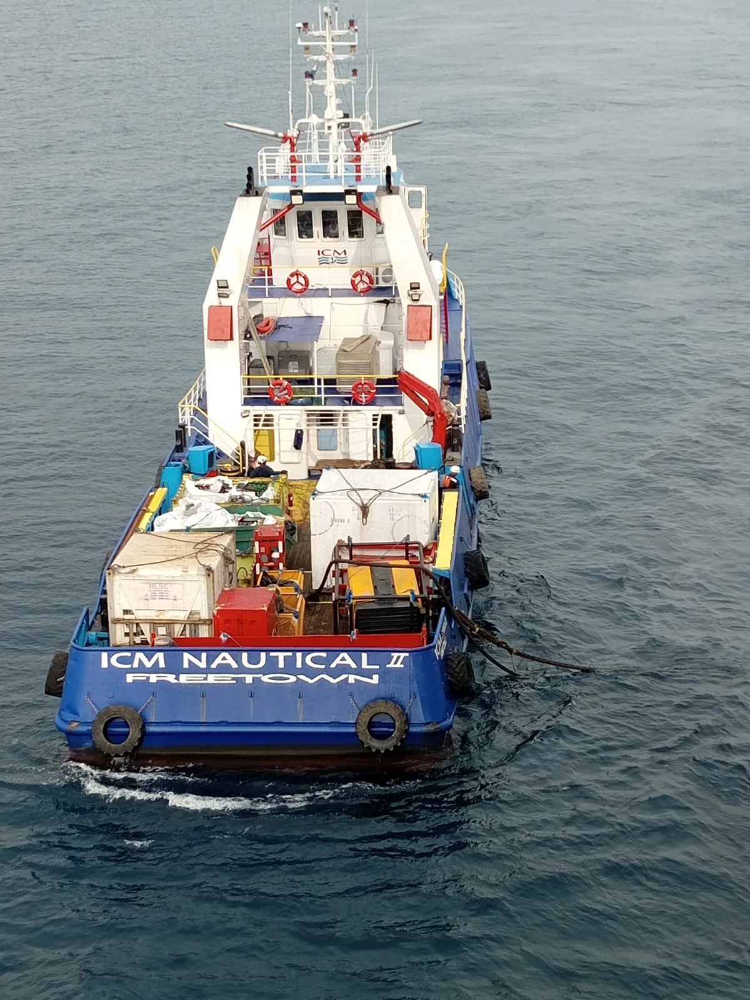
Diagnostic, maintenance préventive et corrective, contrôle pression/température/vibrations, fuites, filtres, moteurs et protections.
Diagnostic électrique et mécanique, vidange, filtres, refroidissement, lubrification, batteries, démarrage, alternateurs et puissance.
Diagnostic, entretien et dépannage de pompes, contrôle roulements, garnitures, accouplements, vibrations, moteurs et commandes.
Maintenance mécanique et électrique, systèmes hydrauliques, commandes, capteurs, dispositifs de sécurité et inspection fonctionnelle.
Moteurs hors-bord et in-bord, diesel et essence, motorisations auxiliaires, diagnostic, entretien, réparation et remise en service.
Électricité, installation et réhabilitation, réseaux NTIC, Data, TV, vidéosurveillance, GPS, géolocalisation, connectivité et assistance technique.
PRUMID développe son pôle Technologie pour accompagner les entreprises, sites industriels, installations terrestres, navires et plateformes dans le déploiement et la maintenance de leurs systèmes de communication et d’information.
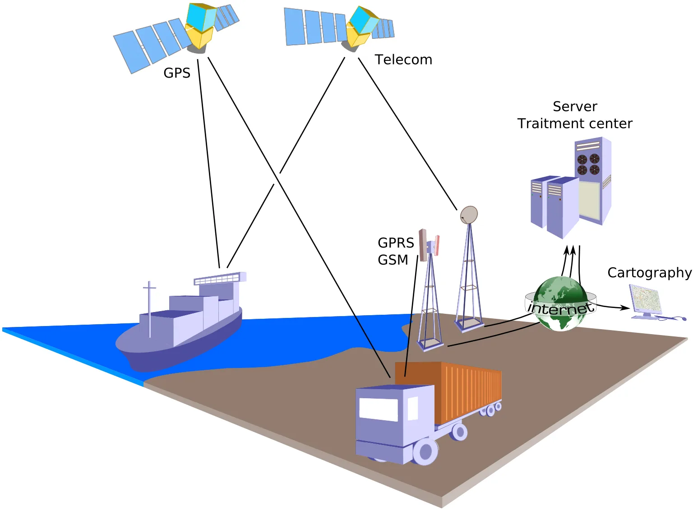
Analyse méthodique des pannes afin d’identifier les causes et limiter les immobilisations inutiles.
Programmes d’entretien adaptés aux équipements, à leurs heures de fonctionnement et aux contraintes d’exploitation.
Fiches d’intervention, contrôles, rapports techniques et suivi des opérations pour une meilleure maîtrise de vos actifs.
Une entreprise basée à Abidjan, au plus près des besoins maritimes, industriels, énergétiques et BTP.
Révisions périodiques, diagnostic électronique, vidanges, filtres, bougies, contrôles de fonctionnement et remise en service.
Entretien moteur Diesel, batteries, systèmes de démarrage, alternateurs, circuits électriques et essais de fonctionnement.
Recherche de panne, maintenance, contrôle pression/température/vibrations, circuits d’air, moteurs et protections.
Inspection, installation, réhabilitation, GPS, géolocalisation, vidéosurveillance et accompagnement technique.
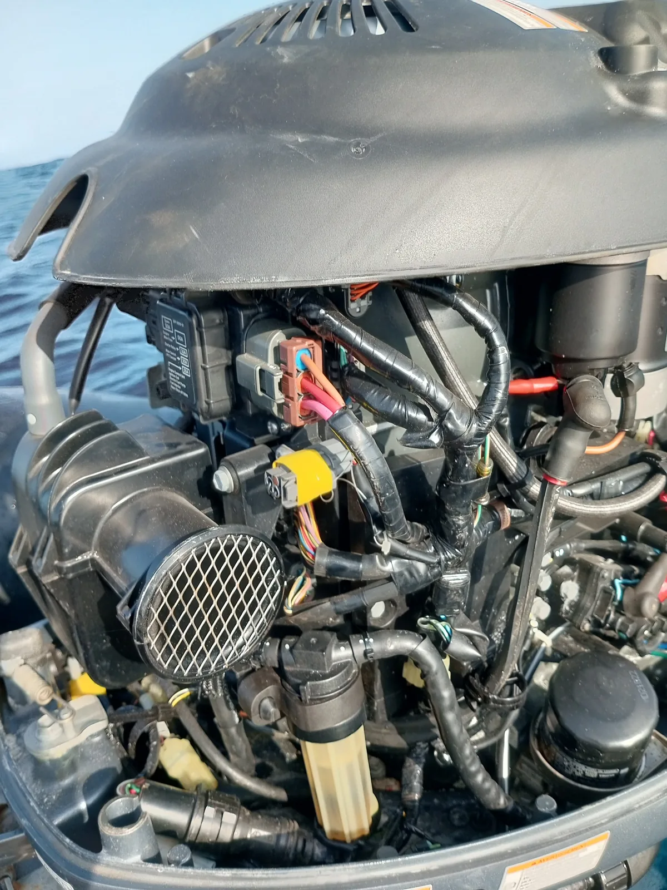
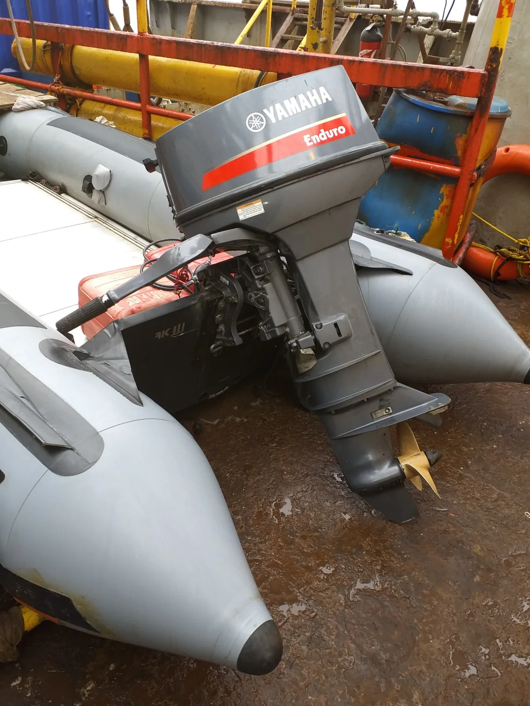
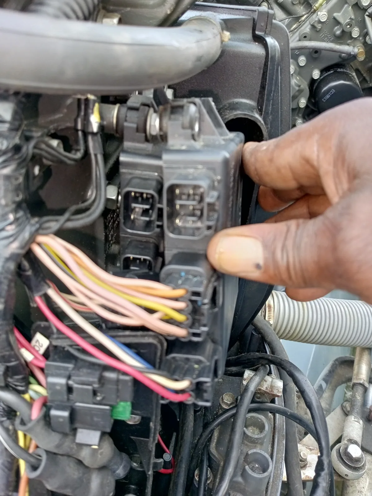
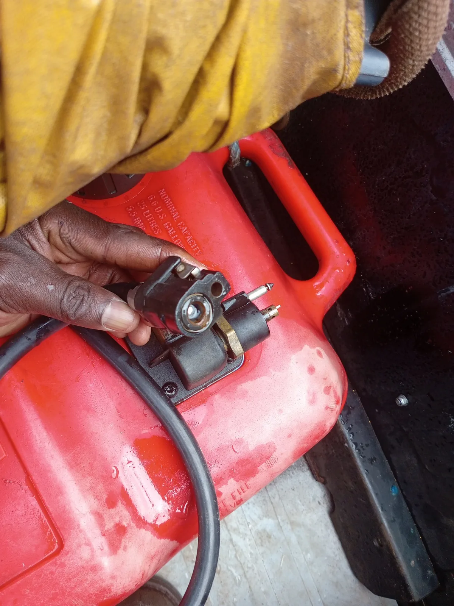
PRUMID structure ses interventions pour améliorer la sécurité, la fiabilité et le suivi technique des équipements.
Informations client, équipement, site d’intervention et symptômes signalés.
Contrôles, vérifications, mesures, défauts détectés et observations techniques.
Maintenance préventive ou corrective, pièces, lubrifiants et consommables utilisés.
Essais après intervention : démarrage, charge, refroidissement, commandes et fonctionnement.
Commentaires techniques, recommandations, rapport d’intervention et historique de maintenance.
Cette galerie présente des équipements, embarcations et environnements techniques illustrant les domaines dans lesquels PRUMID déploie son savoir-faire.
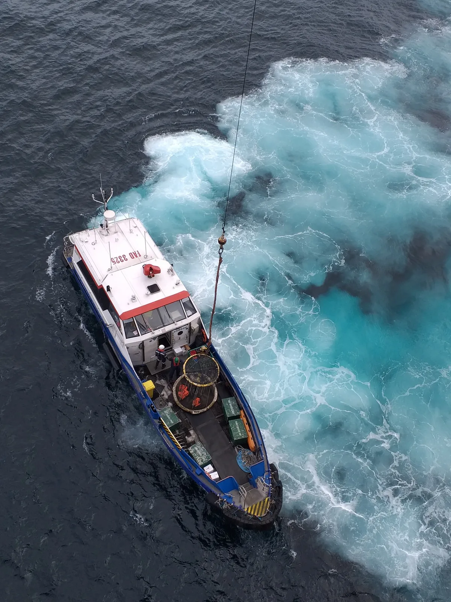
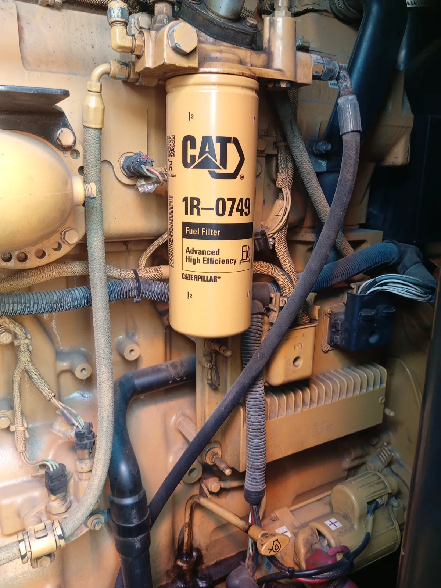
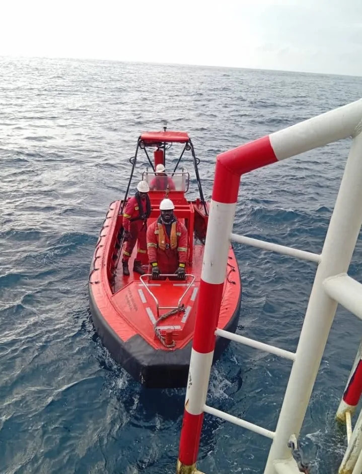
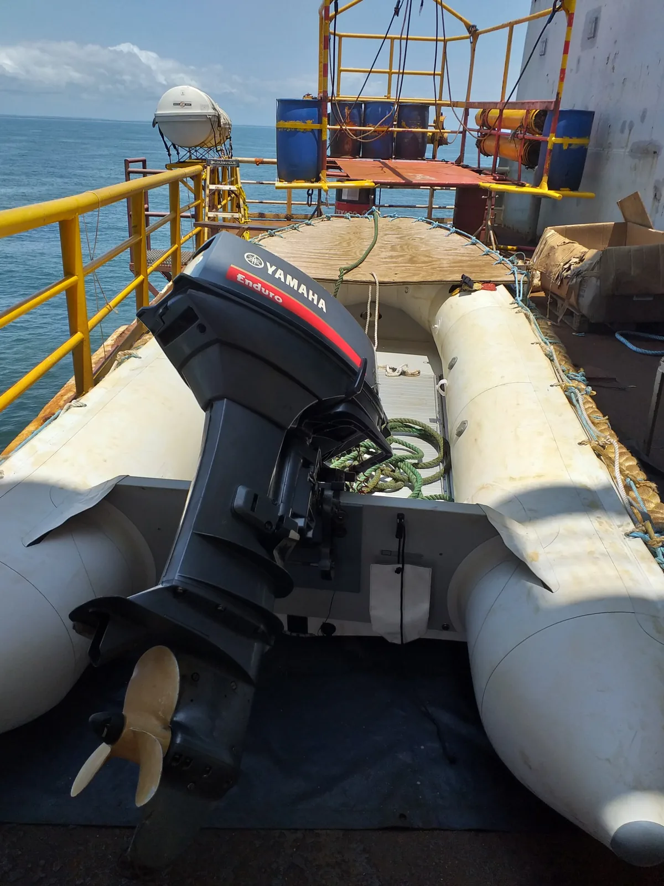
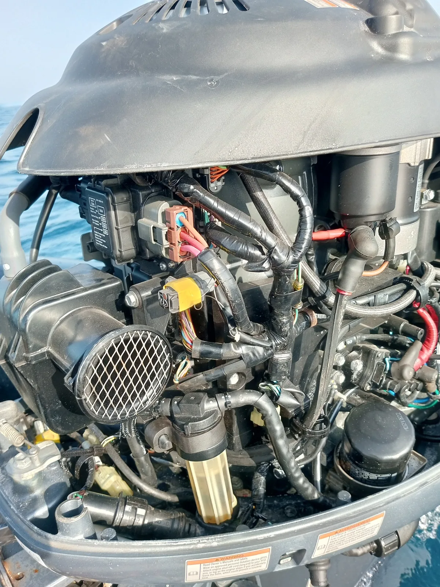
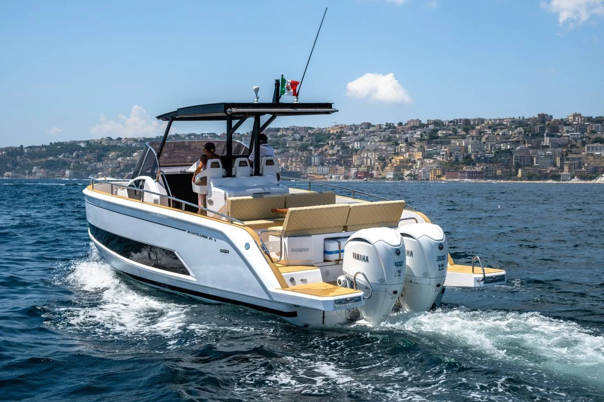
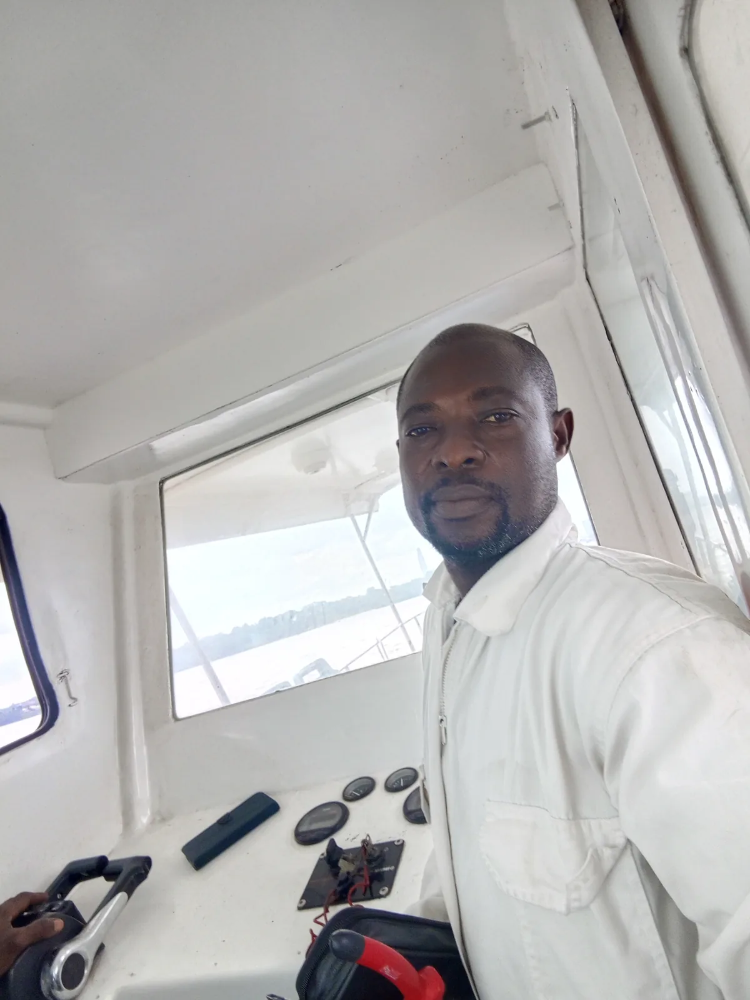
Les visuels du site pourront être enrichis progressivement par les nouvelles interventions PRUMID : date, site, équipement, nature des travaux et résultats.
Parce que la maintenance préventive est un investissement dans la sécurité, la disponibilité et la continuité de votre activité.
PRUMID intervient à Abidjan et accompagne les besoins maritimes, industriels et énergétiques selon la nature des équipements et des opérations.
Pour accélérer l’analyse, merci de préciser :
Parlez-nous de votre équipement, de la panne ou du programme d’entretien souhaité. Nous vous répondrons rapidement.
Nous intervenons notamment sur moteurs marins hors-bord et in-bord, groupes électrogènes, pompes, compresseurs, équipements électriques, réseaux NTIC, vidéosurveillance, GPS, télécommunications et autres équipements techniques associés.
PRUMID est basé à Abidjan et étudie les interventions selon la localisation du site, la nature de l’équipement et les contraintes d’accès.
Idéalement : type d’équipement, marque, modèle, symptômes constatés, localisation et photos ou vidéos utiles.
Oui. PRUMID propose des opérations d’entretien préventif afin de réduire les arrêts, améliorer la fiabilité et prolonger la durée de vie des équipements.
Vous pouvez utiliser le bouton WhatsApp du site, envoyer un e-mail ou remplir la section de demande d’intervention avec les informations techniques disponibles.
Selon la prestation, l’intervention peut être documentée par des contrôles, observations, recommandations, essais et éléments de traçabilité technique.
Qualité – Sécurité est notre Passion
📍 Adresse : Abidjan – Côte d’Ivoire
21 BP 729 Abidjan 21
📧 E-mail : prumidpolytechniquemarine@gmail.com
📱 Téléphones :
(+225) 01 02 02 49 84
(+225) 07 59 07 29 84
RCCM : CI-ABJ-03-2024-B12-00936
N°CC : 2400701M